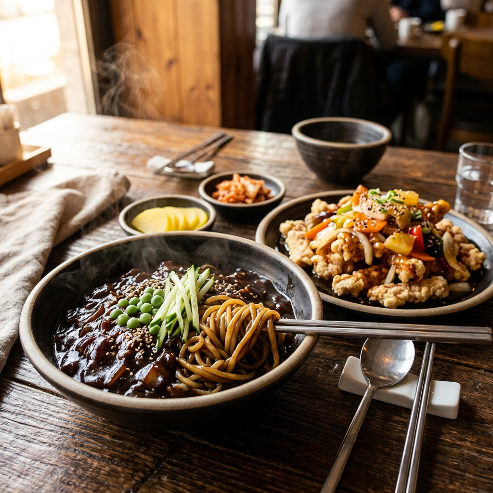

"내가 힘들면 청춘은 얼마나 더 힘들겠노"
— 회성각 대표의 마음입안 가득 퍼져 십리 밖까지 퍼지는 정직하고 깊은 맛
얼리지 않은 신선한 국산 생등심만 고집합니다. 육즙이 살아있는 차별화된 고기 두께를 느껴보세요.
인기 메뉴화력 센 불길 위에서 춘장을 직접 볶아냅니다. 깊은 불맛과 전통의 감칠맛이 가득한 추억의 짜장면입니다.
아삭한 양파의 식감과 고소하고 진한 양념이 어우러져 한 입 가득 풍미가 터지는 회성각만의 명품 간짜장.
미리 튀겨놓지 않습니다. 주문이 들어오는 순간 기름 속에 넣어 겉은 바삭하고 속은 극도로 부드럽습니다.
숙련된 웍질로 재료 하나하나에 강렬한 불맛을 입혔습니다. 짬뽕부터 요리까지 타협 없는 맛을 선사합니다.

회성각을 찾는 분들께 최고의 기억을 남겨 드리기 위해 매일 아침 엄선된 신선한 식재료만 사용하고 즉석에서 조리합니다.
손님이 배불리 먹고 일어설 때까지 아끼지 않는 따뜻한 정
보통 가격에 곱빼기 같은 푸짐함! 든든하게 먹어야 힘든 세상도 헤쳐 나갈 수 있다는 회성각의 신념입니다.
짜장면 5천원대, 그리고 가볍게 곁들일 소주를 단돈 3,500원에 판매합니다. 주머니 사정이 가벼워도 부담 없이 들러 가세요.
곱빼기를 시키면 어마어마한 크기의 그릇에 가득 담겨 나옵니다. 혼자 먹기에 넉넉하고, 둘이서도 배부를 정도의 엄청난 양입니다.
단무지, 양파, 춘장 등은 눈치 보지 않고 마음껏 가져다 드실 수 있도록 셀프바를 무한 제공하고 있습니다.
"내가 힘들면 청춘은 얼마나 더 힘들겠노"
대구 계명대학교 대명캠퍼스 바로 앞에서 청춘들의 가벼운 주머니를 보며 넉넉하게 음식을 담아주던 사장님의 정이 오늘날의 회성각을 만들었습니다.
일반 매장 대비 회성각에서 아낄 수 있는 금액과 풍성한 양을 직접 시뮬레이션해 보세요!
대구의 명소, 계명대 대명캠퍼스 골목에서 넉넉한 인심으로 기다립니다.
대구광역시 남구 명덕로 104 (대명동 2141-1)
도시철도 3호선 남산역 2번 출구에서 300m (계명대학교 대명캠퍼스 정문 건너편 인근)053-628-8588
매일 11:00 - 22:00 (연중무휴)
포장 및 배달 가능 / 단체석 완비기본적으로 양이 매우 많습니다. 곱빼기는 일반 매장의 2배 수준이오니 주문 시 참고해 주세요! 단무지와 양파는 셀프바에서 원하시는 만큼 무한 리필 가능합니다.